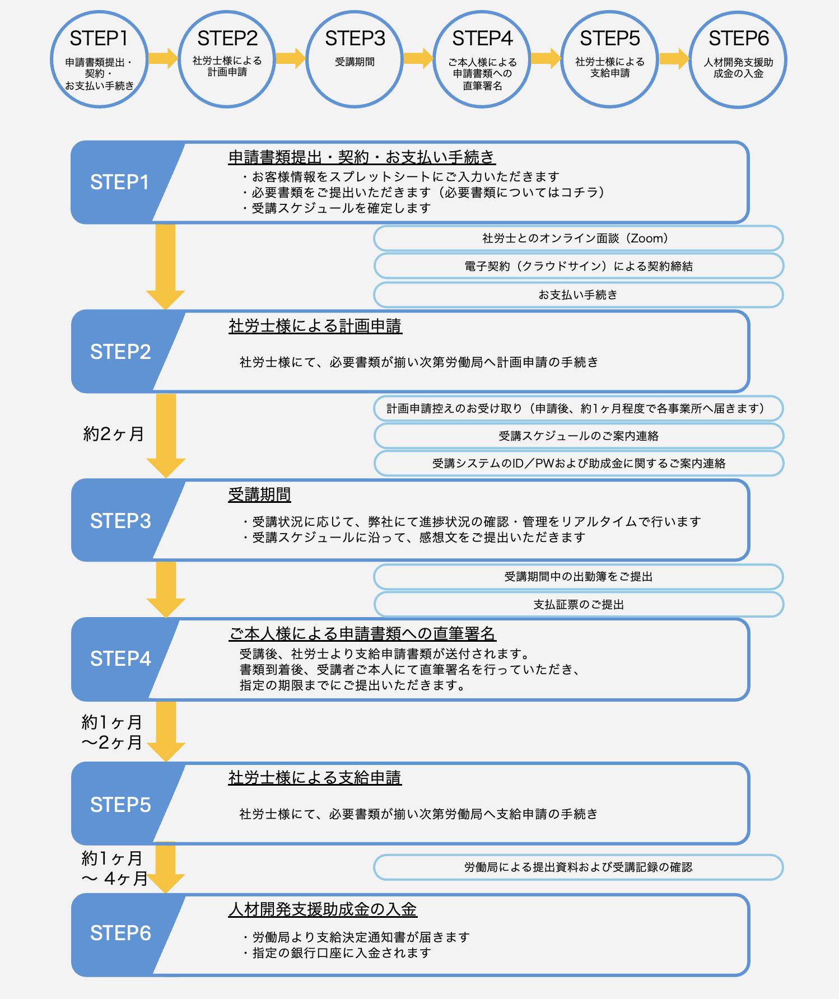

サービス全体の流れ

申請書類一覧
申請時に必要となる書類を一覧でご確認いただけます。
- 申請書類A
- 申請書類B
- 受講報告関連書類
- 署名が必要な提出書類
FAQ
よくあるご質問を掲載しています。
- 受講は就業時間外でも可能ですか？
- 有給休暇中の受講は対象になりますか？
- 動画を途中で止めた場合はどうなりますか？
- 必要書類の提出期限はいつですか？
申請が承認されなかった
事例一覧
申請前の確認資料としてご活用ください。
１．就業時間外に受講・視聴が行われたケース
申請条件として、研修は就業時間内での受講が原則となります。
そのため、就業時間外に視聴した場合は、勤怠記録との照合により助成金申請の対象外となります。
また、休日や残業時間に視聴した場合でも、正式な残業申請が行われている場合のみ有効と認められます。
有給休暇は休日扱いとなりますので就業時間外となります。
- 就業時間外に視聴している
- 有給休暇中に視聴している
- 残業申請や処理が行われていない
- 研修は基本的に就業時間内に受講するようにしてください。
- 残業時間や休日出勤時に視聴する場合は、事前に残業申請を行い、適切な勤怠処理を実施してください。
- 有給休暇中の視聴は避けてください。
２．動画のスキップまたは倍速再生が確認されたケース
※再視聴処理のご案内
受講は「決められた受講期間内に、所定の動画時間を正しく視聴しているか」が重要です。
スキップや早送り、倍速再生などを行った場合、実際の動画時間どおりに視聴していないため、正常な受講として認められません。システム上では再生時間がすべて記録されており、視聴時間が不足している場合は、助成金申請の対象外となります。
- システム上の再生時間と動画の長さが一致しない
- 動画をスキップ・早送り・倍速再生している
- 動画再生中に再生バーに触れてしまい、意図せず再生位置が移動した
- 複数端末などで並行して視聴した
- 各コースごとに、動画の総時間を満たすように1つずつ正しく視聴してください。
- 「少しだけ飛ばしたつもり」でも、履歴には正確に記録され、正常受講とは認められません。
※スキップをしてしまった場合の対応（再視聴処理）
スキップ操作が行われた場合、弊社システム上で検知されます。
通常はスキップができない仕様となっておりますが、ご利用の端末やブラウザ環境によっては、まれに操作が可能となる場合があります。
視聴条件を満たさない状態でスキップが行われた場合、基本的には視聴記録が反映されない仕様となっておりますが、状況によっては再生記録が正しく反映されない状態になり動画の再生時間が0秒に戻る場合があります。
該当する場合は、弊社にて「再視聴処理」（最終の視聴記録時点まで巻き戻し）を行いますので、恐れ入りますが、改めてご視聴いただきますようお願いいたします。
※再生時間も最終の視聴記録時点に戻ります。
３．計画期間内に受講を完了できなかったケース
受講は、事前に定められた受講期間内にすべて完了していることが条件です。
期間内に視聴が完了していない場合は、助成金申請の対象外となります。
また、受講期間外は視聴自体ができず、事前に申請した期間の変更もできません。そのため、期間内にすべての動画を見終える必要があります。
- 受講期間内にすべての動画を視聴しきれなかった
- 受講の進捗管理ができていなかった
- 受講開始後は計画的に視聴を進め、期間内に完了するようにしてください。
- 管理アカウントの進捗状況を活用し、管理者は受講者の進捗を定期的に確認してください。
４．出された感想文の内容が不十分と判断されたケース
本申請では、感想文の提出が必須条件となっています。
感想文が未提出の場合は、その時点で助成金申請の対象外となります。
また、感想文の内容についても、受講内容を踏まえたうえで「自身の業務にどのように活かすか」が具体的に記載されている必要があります。計画申請時に提出している業種・職種との整合性も審査で確認されるため、現在の業務内容と関連性がない場合は、対象外と判断される可能性があります。
- 感想文を提出していない
- 内容が抽象的で、具体的な学びが記載されていない
- 自身の業務との関連性が書かれていない
- 申請時の業種・職種と内容が一致していない
- 受講した内容と感想文の内容が一致していない
- 必ず感想文を提出してください。未提出は即対象外となります。
- 受講内容を踏まえ、「何を学び、どのように業務へ活かすか」を具体的に記載してください。
- 申請時の業種・職種と紐づけて、自身の業務に関連する内容で記載してください。
- 受講内容と一致した内容で記載してください。
- システムにある”感想文の書き方”も参考に使ってください。
５．署名書類が期限内に提出されなかったケース
受講が完了していても、署名済みの必要書類が支給申請期限までにそろっていない場合は、助成金申請の対象外となります。
本申請では手書きサインが必要な書類があるため、対応を後回しにすると回収が間に合わなくなるケースが多く見られます。また、サインの未記入や、雇用契約書と筆跡が大きく異なる場合なども審査対象となるため、正確に記入することが重要です。
申請は社労士による労働局への提出が必要となるため、提出期限だけでなく、その前段の準備期間も考慮する必要があります。
- 手書きサイン済み書類の提出が期限までに間に合わなかった
- 書類対応を後回しにしてしまった
- サイン漏れや記入不備があった
- 雇用契約書と筆跡が一致していない
- 書類は後回しにせず、早めに署名・提出を行ってください。
- サイン漏れや記入ミスがないよう、提出前に必ず確認してください。
- 雇用契約書と同一の本人による署名を行ってください。
- 申請期限だけでなく、社労士への提出締切も意識して余裕を持って対応してください。
６．雇用保険の適用期間外に計画スケジュールが設定されていたケース
本制度では、受講期間が雇用保険の対象期間内であることが申請条件となります。
そのため、視聴自体が計画期間内であっても、雇用保険の対象期間外に該当している場合は、助成金申請の対象外となります。
計画申請時にも確認は行われますが、まれにその段階では見落とされ、支給申請時の審査で発覚し、対象外と判断されるケースがあります。
※受講期間中に雇用保険に加入していれば、支給申請時点で加入していなくても問題ありません。
- 雇用保険の対象期間を考慮せずに計画スケジュールを設定してしまった
- 退職や有給消化により、受講時間が不足してしまった
- 計画スケジュールを設定する際は、必ず受講者の雇用保険加入期間を考慮ください。
- 退職予定や有給消化の期間も考慮し、受講時間が確保できるスケジュールを設定してください。
- 不明点がある場合は、事前に確認したうえでスケジュールを設定してください。
※制度要件は受講完了だけでなく、「対象期間内であること」まで含めて満たしている必要があります。